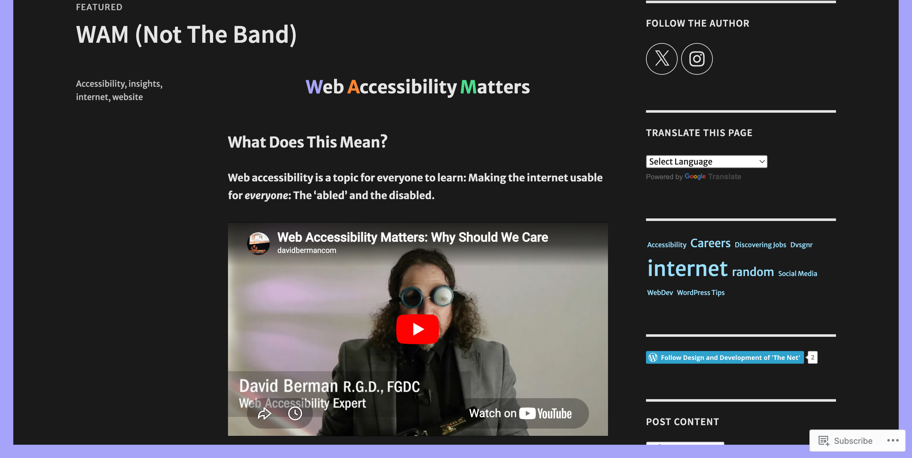

transp.png)
My Wordpress Blog Student Project

Years ago while attending Clark College I took a Wordpress class. I created a Wordpress website/blog discussing what it means to be a "devsigner". All content was created by me while using a Wordpress theme. See the blog